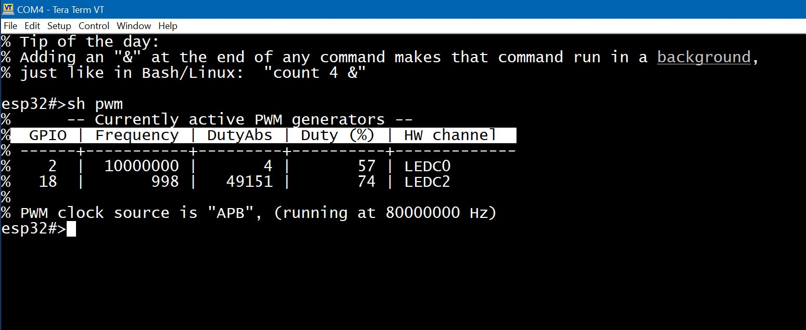

ESPShell поддерживает генерацию прямоугольного сигнала на любом выводе с настраиваемой пользователем частотой и скважностью. Частота может быть установлена от 1 Гц до 10 МГц, с длительностью импульса от 0 (=0%) до 1 (=100%). Значение длительности по умолчанию — 0.5, что соответствует 50% скважности. Для генерации используется драйвер LEDC.
Минимальные и максимальные частоты, достижимые на ШИМ ESP32, зависят от множества факторов и не могут быть точно указаны здесь. ESP32 может работать от 1 Гц, тогда как у ESP32S3 минимальная частота выше.
Хотя у чипа ESP32S3 есть 8 каналов ШИМ, но всего 4 таймера, поэтому одновременно можно генерировать 4 разных частоты на 4 разных выводах. С базовым ESP32 ситуация лучше — там 16 каналов, что позволяет использовать 8 частот.
Для управления ШИМ в ESPShell используется 4 команды:
Команда "pwm" запускает генерацию прямоугольного сигнала на указанном выводе:
esp32#>pwm 2 1000
Приведённая команда запускает прямоугольный сигнал с частотой 1 кГц на выводе 2 (скважность 50%). Это неблокирующая команда, поэтому нет необходимости использовать опцию "&" (см. фоновое выполнение): выполнение происходит в фоне по умолчанию.
Параметр длительности импульса можно задать третьим аргументом команды "pwm": например, установим частоту 5000 Гц на выводе 2, длительность около 30%:
esp32#>pwm 2 5000 0.3
Для остановки генерации на выводе используйте команду "pwm" с одним параметром. Пример остановки на выводе 2:
esp32#>pwm 2
Установка частоты в 0 Гц или использование ключевого слова "off" вместо частоты даёт тот же эффект: отключение ШИМ на выводе. Три команды ниже эквивалентны:
esp32#>pwm 2 esp32#>pwm 2 0 esp32#>pwm 2 off
Важным аспектом является разрешение длительности импульса. Несмотря на то, что ESPShell ожидает число с плавающей точкой (например, 0.721), у аппаратного обеспечения есть ограничения: чем выше частота ШИМ, тем ниже точность задания длительности. Например, при частоте 1000 Гц точность длительности составляет 14 бит. Это значит, длительность может принимать значения от 0 до 2^14-1. При частоте 10 МГц разрешение снижается до 3 бит: доступно всего 4 значения, поэтому длительность 0.721 будет приблизительно преобразована к 0.75.
ESPShell автоматически выбирает наилучшее доступное разрешение длительности для указанной частоты. Это поведение по умолчанию можно изменить командой "var ledc_res": установив положительное значение, вы переопределяете вычисленное разрешение.
Пример:
esp32#>var ledc_res 8
Эта команда задаёт разрешение длительности ШИМ в 8 бит. Попытка запустить ШИМ с частотой 10 МГц при таком разрешении завершится ошибкой.
У ESP32 есть 16 каналов LEDC (ШИМ), а у ESP32S3 — 8 каналов. Смежные каналы (например, канал 0 и канал 1, или канал 6 и канал 7) используют один таймер, поэтому не могут генерировать разные частоты одновременно: изменение частоты на одном канале сразу меняет частоту на соседнем.
Из-за этого ESPShell использует только **чётные** номера каналов. Это гарантирует, что каждый второй канал может иметь уникальную частоту, но уменьшает количество доступных каналов: вместо 8 доступно только 4 на ESP32S3.
Для многих задач, где используется множество ШИМ-выводов, частоты обычно одинаковы, а длительность импульса меняется. Пример — несколько светодиодных лент. Другой пример — многовыходный регулируемый инвертор.
В таких случаях ESPShell можно настроить на использование как чётных, так и нечётных каналов, чтобы использовать все доступные каналы (до 16 на ESP32). Для этого выполните команду "var pwm_ch_inc 1" в shell.
Кроме того, можно вручную указать номер аппаратного канала. В большинстве случаев это не нужно — канал выбирается автоматически, перебирая номера 0, 2, 4, ... Shell использует простую формулу для выбора следующего канала:
Channel_To_Use_Next_Time = Current_Channel + "var pwm_ch_inc"
Ниже пример команды, включающей ШИМ 1 кГц с 50% скважностью на выводе 1, используя канал 2:
esp32#>pwm 1 1000 0.5 2 ← 4-й аргумент — номер каналаЭто изменит внутренний счётчик каналов ESPShell:
esp32#>pwm 2 1000 0.5 5 % PWM on pin#2, 1000 Hz (0.5% duty cycle, channel#5) is enabled % PWM channel 7 is to be used next, if not explicitly setКанал #7 выбран из-за значения по умолчанию переменной pwm_ch_inc, равного 2. Посмотрим, как изменение этой переменной влияет на выбор канала:
esp32#>pwm 2 1000 0.5 5 % PWM on pin#2, 1000 Hz (0.5% duty cycle, channel#5) is enabled % PWM channel 7 is to be used next, if not explicitly set < -- channel 7 esp32#>var pwm_ch_inc 1 esp32#>pwm 2 1000 0.5 5 % PWM on pin#2, 1000 Hz (0.5% duty cycle, channel#5) is enabled % PWM channel 6 is to be used next, if not explicitly set < -- channel 6Установка "pwm_ch_inc" в 0 предотвратит изменение номера канала (если не задан явно через аргумент).
Для отображения статуса и параметров ШИМ-сигналов есть команда "show":
| show pwm | Отображает текущее состояние всех источников ШИМ |

Рис. 2: Пример вывода команды "show pwm"
Таблица показывает, что вывод #2 активен, частота 10 МГц, длительность 57%; Хотя установлено 50% командой "pwm 2 10000000 0.5", аппаратные ограничения допускают только 3 бита для значения длительности, поэтому она указана приблизительно; Вывод 18 также активен, частота 1 кГц и длительность 75%.
DutyAbs — это абсолютное значение длительности импульса, зависящее от процента длительности и разрешения; Другие столбцы показывают номера выводов, частоты и используемый аппаратный канал.